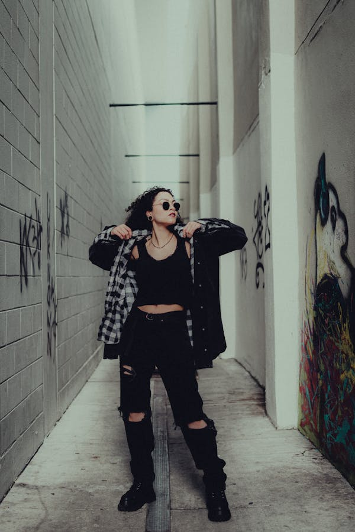
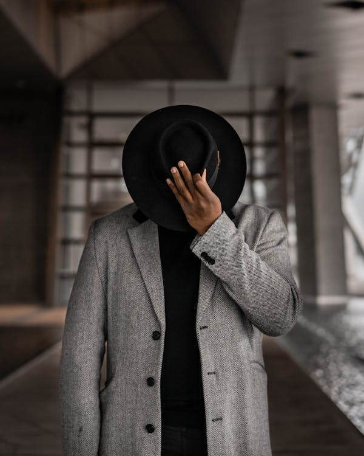

Main Page
Elevate Your Wardrobe Ethically
- Soul & Stitch
-
Crafted with Purpose, Worn with Pride
Welcome to Soul & Stitch, where every garment tells a story and fashion meets a conscience.
Our collections are thoughtfully designed to reflect the beauty of sustainable living, merging modern aesthetics with ethical practices.
At Soul & Stitch, we believe in the transformative power of fashion.
Our pieces are not just clothes; they are expressions of individuality, crafted from eco-friendly materials to ensure that you can wear your values with pride.
Explore a curated selection that combines timeless styles with contemporary flair. Each collection is a celebration of artistic creativity, aimed at inspiring a deeper connection between you and your wardrobe.
Join us on this journey of self-expression and sustainability, where every stitch is a step towards a more conscious world.
Elevate your fashion choices with Soul & Stitch—where style harmonizes with purpose, and every outfit becomes a statement.


